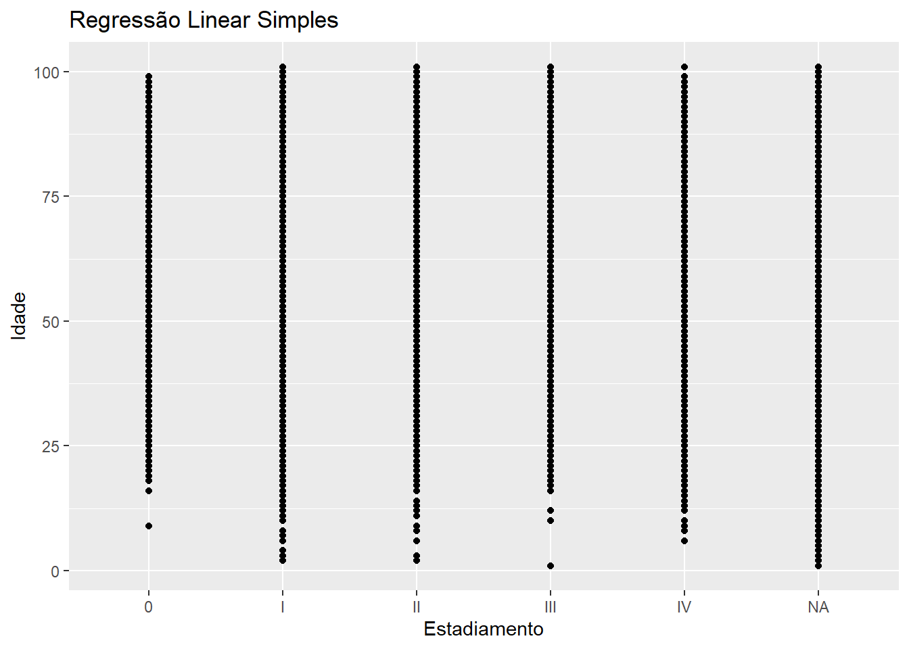
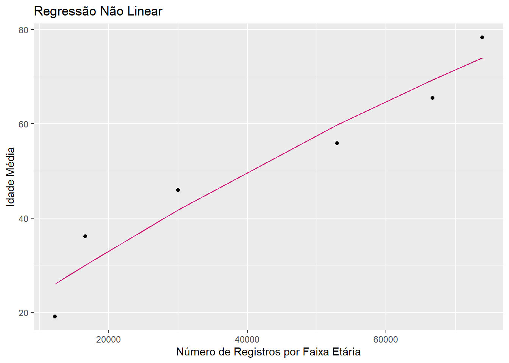

Aplicação prática da discussão realizada no Journal Club.
Emprego de dados de mundo real em oncologia, do registro hospitalar do cancer. Análise comparativa de três tipos de regressão aplicados a dados de oncologia: regressão linear simples, regressão múltipla e regressão não linear. O objetivo é prever a variável idade com base em diferentes fatores clínicos e demográficos.
Carregamento de dados e pacotes
library(tidyverse)
Warning: pacote 'ggplot2' foi compilado no R versão 4.4.2
── Attaching core tidyverse packages ──────────────────────── tidyverse 2.0.0 ──
✔ dplyr 1.1.4 ✔ readr 2.1.5
✔ forcats 1.0.0 ✔ stringr 1.5.1
✔ ggplot2 3.5.1 ✔ tibble 3.2.1
✔ lubridate 1.9.3 ✔ tidyr 1.3.1
✔ purrr 1.0.2
── Conflicts ────────────────────────────────────────── tidyverse_conflicts() ──
✖ dplyr::filter() masks stats::filter()
✖ dplyr::lag() masks stats::lag()
ℹ Use the conflicted package (<http://conflicted.r-lib.org/>) to force all conflicts to become errors
# A tibble: 3 × 3
.metric .estimator .estimate
<chr> <chr> <dbl>
1 rmse standard 14.4
2 rsq standard 0.0168
3 mae standard 11.6
Visualizaçãoo
ggplot(train_data, aes(x = estadiamento, y = idade)) +geom_point() +geom_smooth(method ="lm", col ="deeppink3") +labs(title ="Regressão Linear Simples", x ="Estadiamento", y ="Idade")
`geom_smooth()` using formula = 'y ~ x'
Warning: Removed 185 rows containing non-finite outside the scale range
(`stat_smooth()`).
Warning: Removed 185 rows containing missing values or values outside the scale range
(`geom_point()`).

Regressão Linear Múltipla
Objetivo: Avaliar a relação de múltiplos fatores (tabagismo, sexo, e estadiamento) com a idade ao diagnóstico.
Modelagem
multiple_recipe <-recipe(idade ~ tabagismo + sexo + estadiamento, data = train_data)multiple_workflow <-workflow() %>%add_recipe(multiple_recipe) %>%add_model(linear_model)multiple_fit <- multiple_workflow %>%fit(data = train_data)
# A tibble: 6 × 3
faixa_etaria count idade_media
<fct> <int> <dbl>
1 31-40 anos 16612 36.1
2 41-50 anos 29985 46.0
3 51-60 anos 52990 55.9
4 61-70 anos 66739 65.5
5 Mais de 70 anos 73871 78.4
6 <NA> 12240 19.1
Modelagem
# Criando a receita com uma transformação polinomialnonlinear_recipe <-recipe(idade_media ~ count, data = agg_data) %>%step_poly(count, degree =2)# Criando o workflownonlinear_workflow <-workflow() %>%add_recipe(nonlinear_recipe) %>%add_model(linear_reg() %>%set_engine("lm"))# Ajustando o modelo aos dados agregadosnonlinear_fit <- nonlinear_workflow %>%fit(data = agg_data)
# Previsões para o conjunto agregadoagg_data <- agg_data %>%mutate(pred =predict(nonlinear_fit, new_data = agg_data)$.pred)# Visualização do ajusteggplot(agg_data, aes(x = count, y = idade_media)) +geom_point() +geom_line(aes(y = pred), color ="deeppink3") +labs(title ="Regressão Não Linear",x ="Número de Registros por Faixa Etária",y ="Idade Média" )

Visualização
ggplot(train_data, aes(x = faixa_etaria, y = idade)) +geom_point() +geom_smooth(method ="lm", formula = y ~poly(x, 2), col ="deeppink3") +labs(title ="Regressão Não Linear", x ="Faixa Etária", y ="Idade")
Warning: Removed 185 rows containing non-finite outside the scale range
(`stat_smooth()`).
Warning: Removed 185 rows containing missing values or values outside the scale range
(`geom_point()`).
# A tibble: 6 × 4
.metric .estimator .estimate Model
<chr> <chr> <dbl> <chr>
1 rmse standard 14.4 Linear
2 rsq standard 0.0168 Linear
3 mae standard 11.6 Linear
4 rmse standard 13.5 Múltiplo
5 rsq standard 0.0860 Múltiplo
6 mae standard 10.8 Múltiplo
Discussão
Possíveis discussões
O modelo regressão linear simples mostrou que o estadiamento tem uma relação direta com a idade ao diagnóstico.
A regressão múltipla evidenciou como múltiplos fatores afetam a idade de forma combinada.
O modelo não linear capturou melhor a relação complexa entre faixa etária e idade.